ECG Blog #251 (65) — Chu kỳ kết thúc NHƯ THẾ NÀO?
Điện tâm đồ ở Hình-1 được ghi từ một người đàn ông 85 tuổi đến khám vì "chóng mặt".
CÂU HỎI:
- Bạn có thể giải thích điều gì đang xảy ra với từng nhát trên bản ghi này không?

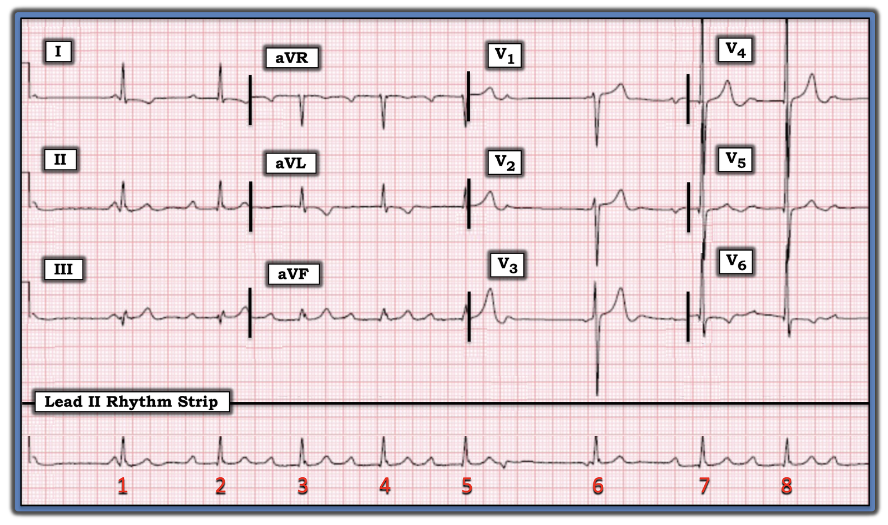
Cách tiếp cận tuần tự của tôi với ca hôm nay: Đây quả thật là một bản ghi khó! Tôi cho phép mình nhìn lướt qua điện tâm đồ 12 chuyển đạo trước khi đi sâu vào chi tiết của dải nhịp DII phức tạp — vì trước hết tôi muốn chắc chắn rằng nguyên nhân của nhịp này không phải là một biến cố cấp tính.
- Tất cả các nhát trên bản ghi này đều hẹp — do đó là nhịp trên thất! Điều này có nghĩa là có thể áp dụng các tiêu chuẩn "thông thường" về lớn các buồng tim và đánh giá sóng ST-T.
- Một số tiêu chuẩn của LVH được thỏa mãn rõ ràng — dựa trên sóng S rất sâu ở V3,V4 (tiêu chuẩn Peguero) — và sóng R rất cao (chồng lấn lên nhau) ở V5,V6 (Để biết thêm về LVH — Xem ECG Blog #245 — chú ý tới Audio Pearl và các hình trong phần Bổ sung để biết chi tiết).
- Có sóng T đảo ngược mức độ vừa ở một số chuyển đạo bên (tức là các chuyển đạo I, aVL và V6), phù hợp với "tăng gánh" thất trái (LV strain) và/hoặc một phần thiếu máu cục bộ — nhưng không có gì giống một biến cố tim cấp tính!
Cách tiếp cận tuần tự của tôi với nhịp:
Như mọi khi — tôi bắt đầu cách tiếp cận hệ thống với nhịp bằng việc đánh giá Ps, Qs và 3Rs (như đã bàn chi tiết trong ECG Blog #185).
- Sóng P — Thấy một nhịp nhĩ khá (nhưng không hoàn toàn) đều (các mũi tên ĐỎ đánh dấu sóng P xoang ở Hình-2).
- Như đã nói ở trên — QRS hẹp — điều này xác nhận nhịp là nhịp trên thất.
- Nhịp rõ ràng không hoàn toàn đều (Regular) — nên tần số (Rate) thay đổi. Về R thứ 3 (tức là "Relation" — mối liên quan giữa sóng P và các phức bộ QRS lân cận) — có vẻ như phần lớn các sóng P xoang (mũi tên ĐỎ) có thể liên quan với các phức bộ QRS lân cận — nhưng chúng ta cần nhìn kỹ hơn!

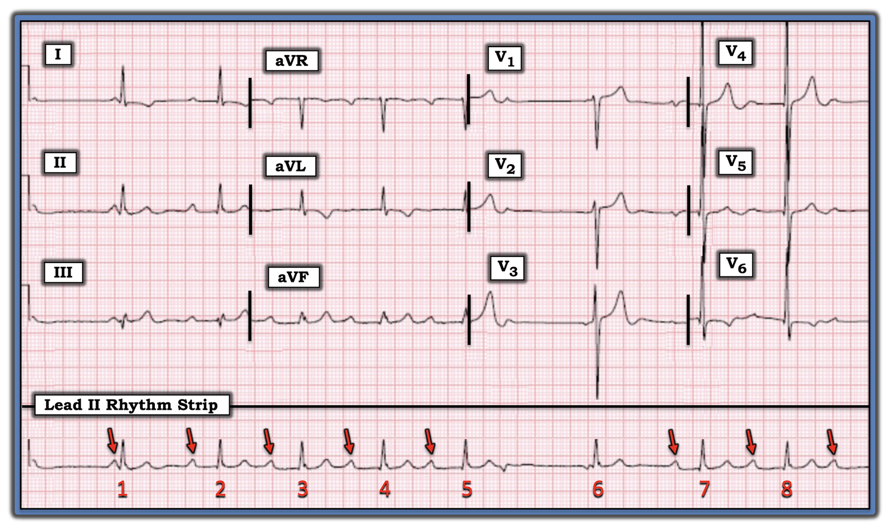
CÂU HỎI bổ sung:
- Hãy nhìn lại Hình-2. Ngoài các sóng P xoang (mũi tên ĐỎ) — Có dấu hiệu nào khác của hoạt động nhĩ trên bản ghi này không?
- Trong tất cả các sóng P thấy ở Hình-2 — bạn nghi ngờ NHỮNG sóng nào được dẫn truyền (và những sóng nào không)?
Ca bệnh tiếp tục:
Ngoài các sóng P xoang (mũi tên ĐỎ) — tôi đã đánh dấu các dấu hiệu của hoạt động nhĩ khác bằng một mũi tên VÀNG và một mũi tên XANH LAM (Hình-3). Thử thách là tìm ra mối liên quan (nếu có) với các phức bộ QRS lân cận của từng sóng P ở Hình-3.
- ĐIỂM THEN CHỐT (PEARL) #1: Khi đối mặt với một nhịp phức tạp biểu hiện nhiều đặc điểm khác nhau (như dải nhịp ở Hình-3) — đôi khi dễ nhất là bắt đầu bằng cách xem LIỆU có đặc điểm nào tôi chắc chắn giải thích được không. Sau đó tôi xem có một "nhịp nền" hay không — và tôi để lại sau cùng việc diễn giải những đặc điểm mà tôi chưa chắc chắn.
- Ở Hình-3 — Mặc dù có một sóng P xoang đi trước nhát #1 — khoảng PR này rõ ràng quá ngắn để dẫn truyền được. Vì hình dạng QRS của nhát #1 hẹp và gần như giống hệt hình dạng QRS của mọi nhát khác trên bản ghi này — nhát #1 không phải là nhát dẫn truyền từ xoang. Lưu ý khoảng ngưng dài đi trước nhát #1. Điều này gợi ý nhát #1 có lẽ là một nhát thoát bộ nối.
- Không có phức bộ QRS nào đi sau sóng P âm được đánh dấu bằng mũi tên VÀNG ở Hình-3. Điều này gợi ý không có "dẫn truyền xuôi" của sóng P âm này (sóng P này trông rất khác về hình dạng so với các sóng P xoang).
- Sóng P được đánh dấu bằng mũi tên XANH LAM cũng trông rất khác so với các sóng P xoang (mũi tên ĐỎ) trên bản ghi này. Do đó — nhát #6 không phải là nhát dẫn truyền từ xoang. Lưu ý khoảng ngưng (tức là 7,5 ô lớn = 1,5 giây) giữa nhát #6 và phức bộ QRS đi trước. Do hình dạng QRS của nhát #6 hẹp và gần như giống hệt hình dạng QRS của mọi nhát khác trên bản ghi này — điều này gợi ý nhát #6 nhiều khả năng nhất là hoặc một nhát thoát nhĩ lạc chỗ hoặc bộ nối.
ĐIỂM THEN CHỐT (PEARL) #2: Dạng blốc AV độ 2 hay gặp nhất là Mobitz loại I ( = Wenckebach AV) — được chẩn đoán khi thấy khoảng PR dài dần cho tới khi một nhát bị rớt. Tiếp theo là một khoảng ngưng ngắn — sau đó chu kỳ Wenckebach kế tiếp bắt đầu với khoảng PR ngắn hơn khoảng PR dài nhất thấy ngay trước khoảng ngưng.
- Điều không được nhiều người nhận ra — là một chu kỳ Wenckebach có thể kết thúc theo những cách khác (Xem Audio Pearl bên dưới).

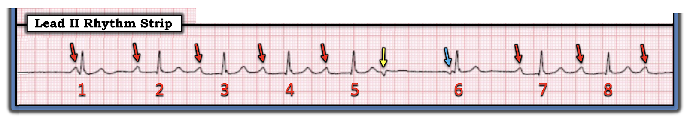
— Ca bệnh tiếp tục BÊN DƯỚI Audio Pearl hôm nay ... —
=======================================
LƯU Ý: Đến đây, một số bạn đọc có thể muốn nghe ECG Audio PEARL dài 6:20 phút trước khi đọc Suy nghĩ của tôi về giản đồ bậc thang (laddergram) mà tôi dựng ở dưới.
=======================================

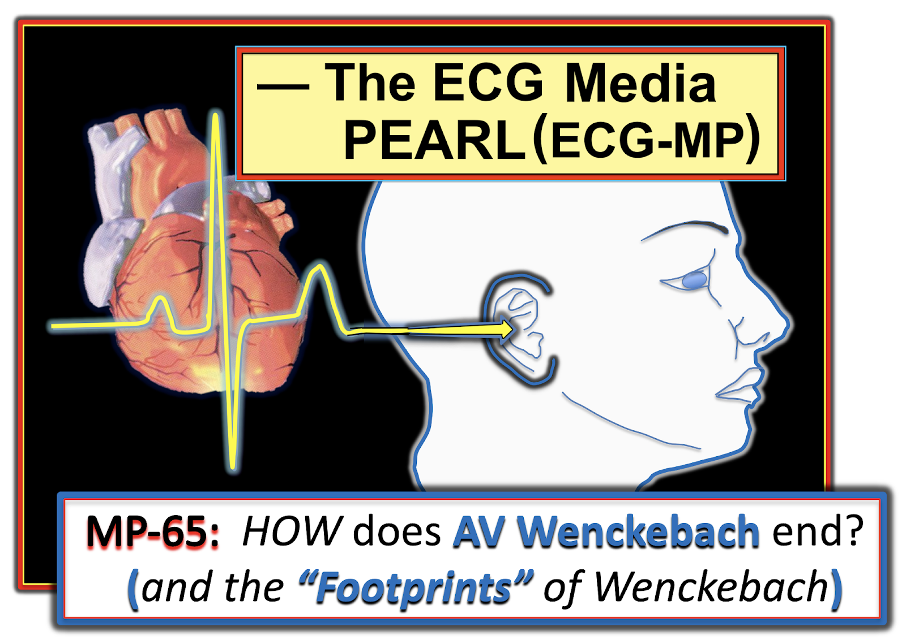

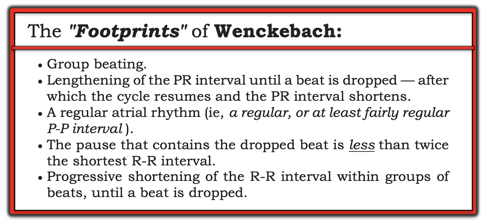
ECG Media PEARL #65 (6:20 phút Audio) hôm nay — Ôn lại các cách khác nhau mà một chu kỳ Wenckebach AV có thể kết thúc (đồng thời ôn lại "Dấu chân" của Wenckebach).
================================
Dựng GIẢN ĐỒ BẬC THANG:
Cơ chế phức tạp của ca hôm nay được giải thích tốt nhất bằng cách dựng từng bước một Giản đồ bậc thang (Xem ECG Blog #188 để ôn lại cách đọc và/hoặc vẽ giản đồ bậc thang).
- LƯU Ý: Ca hôm nay là một ví dụ trong đó tôi cần dựng một giản đồ bậc thang hợp lý để "giải" được rối loạn nhịp.
- Chú thích tuần tự của 7 hình tiếp theo minh họa quá trình tư duy của tôi khi dựng giản đồ bậc thang này.

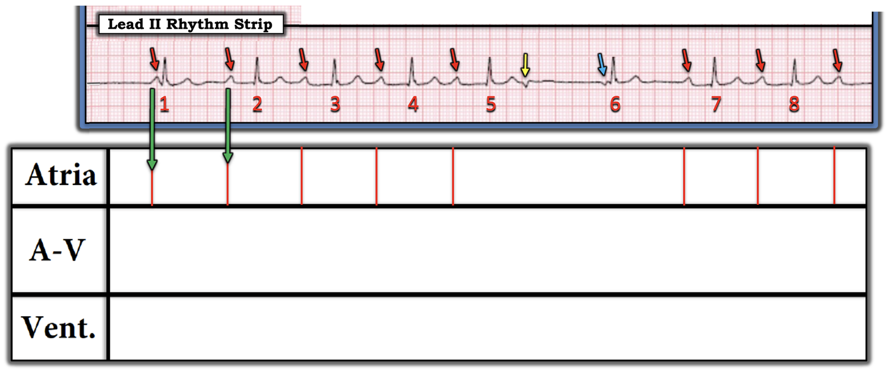

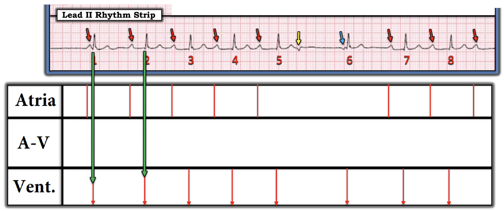

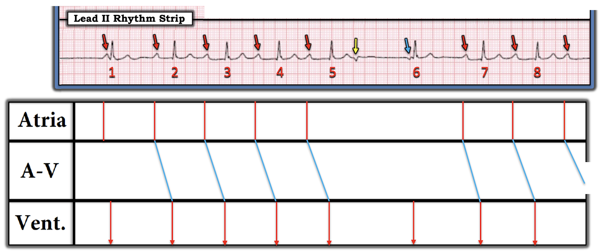

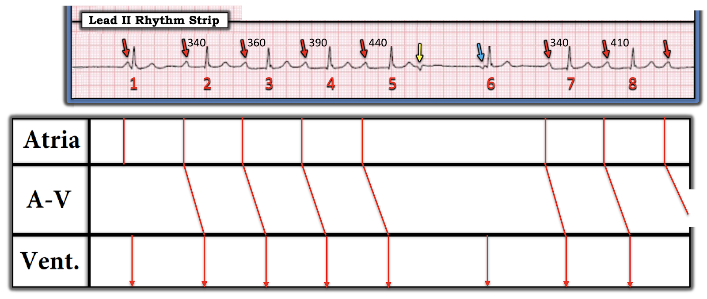

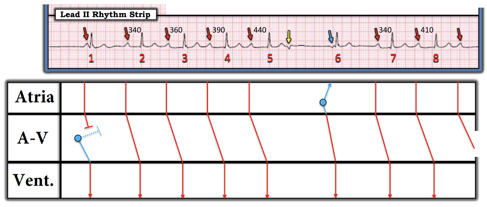

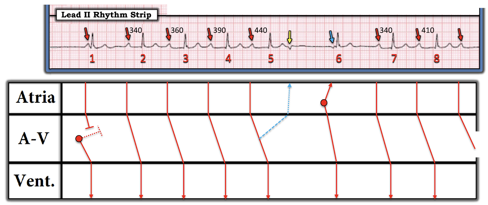

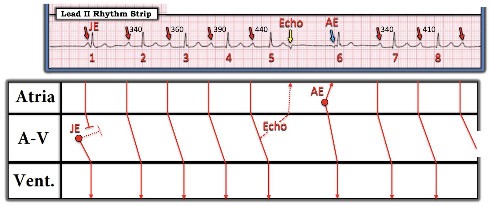
Kết luận Ca bệnh Hôm nay:
Ngoài blốc AV độ 2 Mobitz I — người đàn ông 85 tuổi bị chóng mặt này có nhịp chậm đáng kể kèm các khoảng ngưng khi theo dõi thêm. Bệnh nhân đã được đặt máy tạo nhịp vĩnh viễn.
==================================
==================================
Lời cảm ơn: Xin cảm ơn 林柏志 (từ Đài Loan) đã chia sẻ ca bệnh và bản ghi này.
==================================
Các bài ECG Blog liên quan tới ca hôm nay:
- ECG Blog #185 — Ôn lại cách tiếp cận Ps, Qs & 3R để đọc nhịp một cách hệ thống.
- ECG Blog #164 — Ôn lại một ca blốc AV độ 2 Mobitz I, kèm bàn luận chi tiết về "Dấu chân" của Wenckebach.
- ECG Blog #236 — Ôn lại trong Video Pearl #52 dài 15 phút cách nhận biết các blốc AV độ 2 (bao gồm blốc AV "mức độ cao").
- ECG Blog #186 — Ôn lại khi nào nên nghi ngờ blốc độ 2, Mobitz loại I.
- ECG Blog #239 — Ôn lại khái niệm Nhát dội (Echo beats) và ứng dụng lâm sàng của nó (trình bày thêm một ca Wenckebach bị chấm dứt bởi nhát dội).
- ECG Blog #188 — Ôn lại cách hiểu (và cách vẽ) Giản đồ bậc thang!